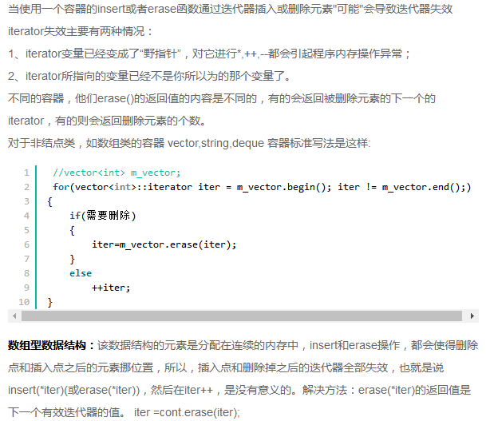

5.17~5.18
1.
2.派生类转换为基类,可以隐式，（抛弃一部分即可）
基类转派生类，不能隐式转换，（不知道添加什么）
3. 指针变量可以通过求地址运算符（ &) 来获得地址值，可以通过指针变量获得地址值，还可以通过标准函数获得地址值
4. vector的扩充机制：按照容器现在容量的一倍进行增长。vector容器分配的是一块连续的内存空间，每次容器的增长，并不是在原有连续的内存空间后再进行简单的叠加，而是重新申请一块更大的新内存，并把现有容器中的元素逐个复制过去，然后销毁旧的内存。这时原有指向旧内存空间的迭代器已经失效。
5. 带参数的构造函数也可以是默认构造函数，只要所有参数都有默认值
6.putchar（） c语言函数之一，作用是向终端输出一个字符。其格式为putchar(c)，其中c可以是被单引号（英文状态下）引起来的一个字符，可以是介于0~127之间的一个十进制整型数（包含0和127），也可以是事先用char定义好的一个字符型变量
7. 继承中的父类的私有变量是在子类中存在的，不能访问是编译器的行为，是可以通过指针操作内存来访问的
8. 如果表达式包含signed和unsigned int，signed会被转换为unsigned
9.
void main（）
{
int y=2456；
printf ("y=│%3o│ y=│%8o│y=│%#8o│ y=│%08o│",y,y,y,y);
}
y=│4630│ y=│□□□□4630│ y=│□□□04630│ y=│00004630│
因为y的输出是以其八进制的形式输出，(2456)10错误的。%3o表示以八进制数形式输出，占3个空格的位置，右对齐，左边多余的位置补空格，但实际数据的宽度为4大于规定的宽度，所以此时按实际宽度输出，故第一个y的输出为│4630│。%8o与%3o的差别就在于输出占8个空格的位置，所以左边要补4个空格，故第二个y的输出也为│□□□□4630│.%#8o与%8o的差别只是输出时必须输出八进制前导0，所以第三个y的输出为│□□□□4630│.%08o与%8o的差别只是输出时左边多余的位置补0，所以第四个y的输出为│00004630│.正确答案应为B。
10.scanf ：当遇到回车，空格和tab键会自动在字符串后面添加'\0'，但是回车，空格和tab键仍会留在输入的缓冲区中。
gets(): 以回车结束读取，使用'\0'结尾.回车符'\n'被舍弃没有遗留在缓冲区。可以用来输入带空格的字符串。
getch()：
所在头文件：conio.h
函数用途：从控制台读取一个字符，但不显示在屏幕上
例如：
char ch;或int ch；
getch();或ch=getch();
用getch();会等待你按下任意键，再继续执行下面的语句；
用ch=getch();会等待你按下任意键之后，把该键字符所对应的ASCII码赋给ch,再执行下面的语句。
getchar():
该函数声明在stdio.h头文件中，使用的时候要包含stdio.h头文件。如：
#include<stdio.h>
int getchar(void);
getch与getchar基本功能相同,差别是getch直接从键盘获取键值,不等待用户按回车,只要用户按一个键,getch就立刻返回, getch返回值是用户输入的ASCII码,出错返回-1.输入的字符不会回显在屏幕上.getch函数常用于程序调试中,在调试时,在关键位置显示有关的结果以待查看,然后用getch函数暂停程序运行,当按任意键后程序继续运行.
11. int *p = &n; p指向n，p表示n的地址；*p表示n的内容
12. bit就是位，也叫比特位，是计算机表示数据最小的单位。
byte就是字节，1byte=8bit，1byte就是1B；
一个字符=2字节；
1KB=1024B